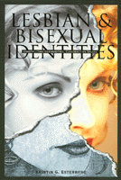

A revealing examination of how lesbian and bisexual women come to see themselves and what those identities mean to them
A revealing examination of how lesbian and bisexual women come to see themselves and what those identities mean to them


 A revealing examination of how lesbian and bisexual women come to see themselves and what those identities mean to them
A revealing examination of how lesbian and bisexual women come to see themselves and what those identities mean to them

|  |
Lesbian and Bisexual IdentitiesConstructing Communities, Constructing SelvesKristin G. Esterbergpaper EAN: 978-1-56639-510-6 (ISBN: 1-56639-510-0) |
This book examines the stories of lesbian and bisexual women in a Northeast community who share who they are, how they have come to see themselves as lesbian or bisexual, and what those identities mean to them. Drawing on social constructionist approaches to identity, Kristin G. Esterberg argues that identities are multiple and contingent. Created within the context of specific communities and within specific relationships, lesbian and bisexual identities are ways of sorting through experiences of desires and attractions, relationships, and politics. Their meanings change over time as women grow older and have more varied experiences, as the communities and sociopolitical worlds in which they live change, and as their life circumstances alter.
In interviews conducted over a four-year time period, women describe the lesbian community they live in; how they see its structure, its social groups, its informal rules and norms for behavior; and their places inside -- or on the margins of -- the community. Lesbian and Bisexual Identities reveals how women fall in and out of love, how they "perform" lesbian or bisexual identity through clothing, hairstyle, body language, and talk, and many other aspects typically not considered. The women present a variety of accounts. Some consider themselves "lesbian from birth" and have constructed their lives accordingly, while others have experienced significant shifts in their identities, depending on the influences of feminism, progressive politics, the visibility of the lesbian community, and other factors.
Esterberg offers vivid accounts that defy the stereotypes so commonly offered. Lesbian and Bisexual Identities not only presents women's stories in their own words, it moves beyond storytelling to understand how these accounts resonate with social science theories of identity and community.
Excerpt available at www.temple.edu/tempress
Acknowledgments
Introduction
1. Theorizing Identity: Lesbian and Bisexual Accounts
2. Cover Stories
3. Changing Selves
4. Essentially Lesbian? Performing Lesbian Identity
5. Race, Class, Identity
6. Twelve Steppers, Feminists, and Softball Dykes
7. Rule Making and Rule Breaking
8. Bisexual Accounts and the Limits of Lesbian Community
9. Beyond Identity and Community?
Appendix: Methodology
Notes
References
Index
Kristin G. Esterberg is Assistant Professor of Sociology and Director of Women's Studies at the University of Missouri in Kansas City. She is the author of numerous articles on the social construction of gay and lesbian identities.
Sexuality Studies/Sexual Identity
Women's Studies
Sociology
© 2015 Temple University. All Rights Reserved. This page: http://www.temple.edu/tempress/titles/1239_reg.html.